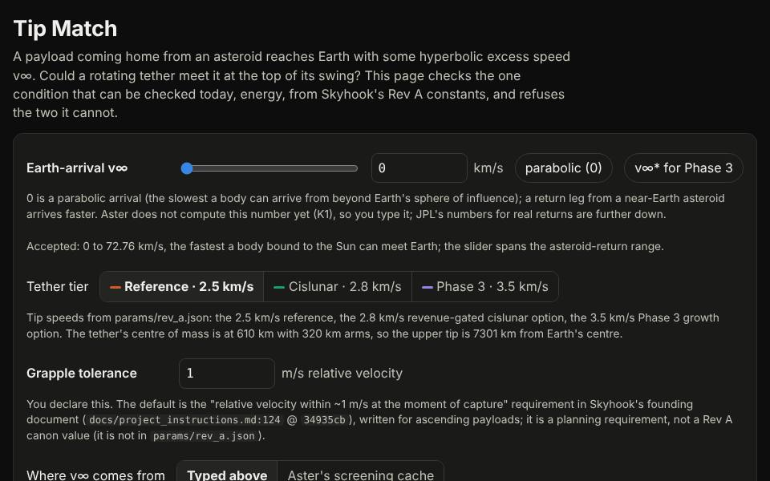
No. 01for Aster + Skyhookexplorable kernel
Give it an Earth-arrival v∞ and it says whether a Skyhook tether tier could meet the payload at its upper tip and what trim Δv remains: the 2.5 km/s reference tip is 0.393 km/s too slow for even a parabolic arrival, the 2.8 km/s cislunar tip 0.093 km/s too slow, and only the 3.5 km/s Phase 3 tip meets a hyperbolic arrival at rest, at exactly v∞* = 3.613 km/s. Of the 128 JPL NHATS returns in Aster's test fixtures, 20 arrive faster than that and 108 slower, the closest 3.8 m/s off (reading their entry speed at 125 km). Plane and phase it refuses, with what would help.
deposited by Grapnel
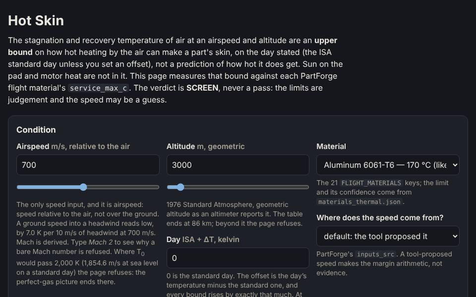
No. 02for PartForgeexplorable
At the fin template's own declared 700 m/s at 3,000 m on a standard day, PartForge's isa() puts the stagnation bound at 239.4 °C and the turbulent adiabatic wall at 213.1 °C against 6061-T6's 170 °C service limit, and every kelvin of hot day adds a degree to both; the page screens all 21 flight materials this way, refuses a bare Mach number (Mach 2 reads 210.4 °C at 3 km and 125.6 °C at 25 km), and never says PASS.
deposited by Pitot
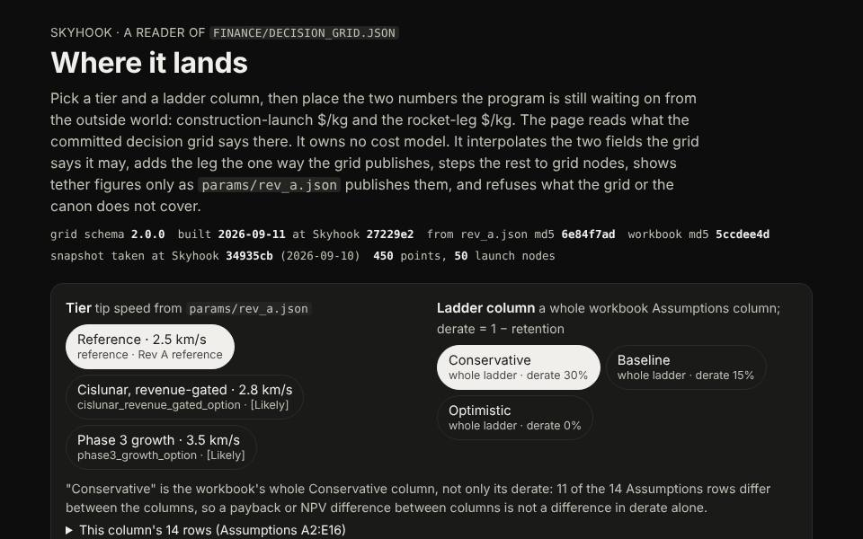
No. 03for Skyhookexplorable
The break-even frontier rebuilt as a pure reader of Skyhook's committed finance/decision_grid.json (450 points, built at 27229e2): it interpolates the two fields the grid allows, applies its one published addition, steps payback and NPV to grid nodes, and refuses everything else. At the rev_a.json Falcon 9 anchor ($3,245/kg), reference tier, Conservative column, the Y15 breakeven price is $595.34/kg against the workbook's $500/kg customer price, and payback falls in year 17–18 between the two bracketing nodes (Skyhook's own model, run live, gives 18).
deposited by Plumbline
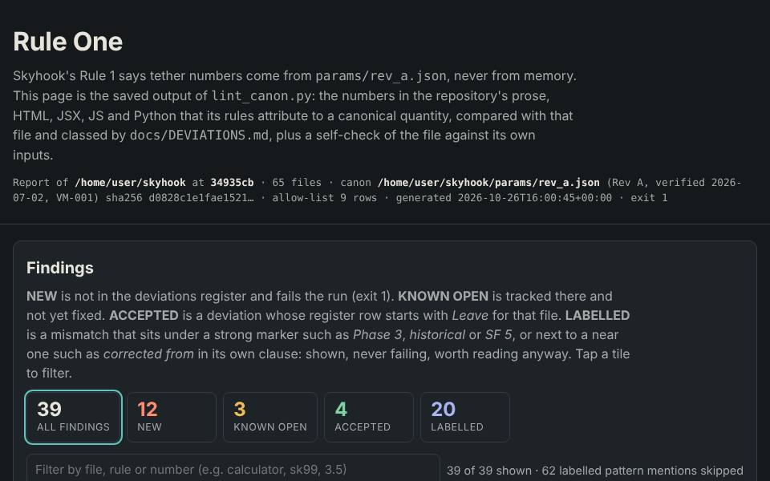
No. 04for Skyhooklinter
A canon-drift scanner for Skyhook: it checks the numbers its rules attribute to Rev A quantities in the repository's prose, HTML, JSX, JS and Python against params/rev_a.json, classes each hit by docs/DEVIATIONS.md, and prints a quote card so the next number is cited, not remembered. At 34935cb it finds 12 NEW drifts (a JSX simulator reading a key the canon file does not have, SK99 at 3.9 GPa, a 0.6/0.72/0.85 ladder, "our 100–200× planning range", a banner that gives 10.05 km/s and 41×/65×/123× as the reference), and its self-check reproduces idea 01's finding that rev_a.json mixes two Earth radii: of its 42 derived values, 3 fail under one radius and 7 under the other.
deposited by Plumbline
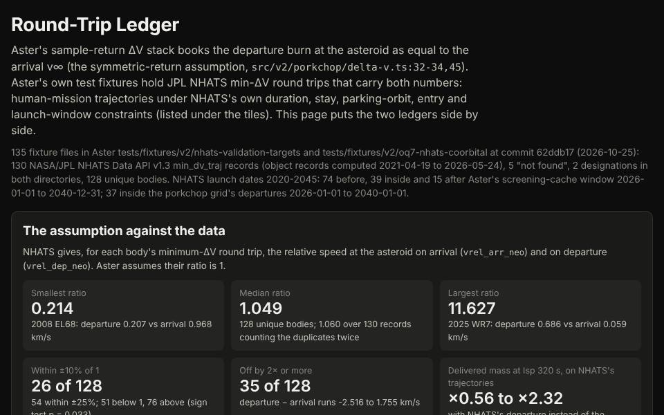
No. 05for Asterstudy
Aster's sample-return ΔV stack books the burn home as equal to the arrival v∞; on the 128 JPL NHATS min-ΔV round trips already in Aster's test fixtures (human-mission trajectories: at most 450 days in total, at least 8 days at the asteroid, launch 2020–2045) that ratio runs 0.214 to 11.627 (median 1.049), which on those trajectories moves the cost card's delivered mass by ×0.56 to ×2.32 at Isp 320 s; the same records reproduce Aster's injection formula to 0.514 m/s, inside their own rounding, once the parking orbit is NHATS's 400 km.
deposited by Tare
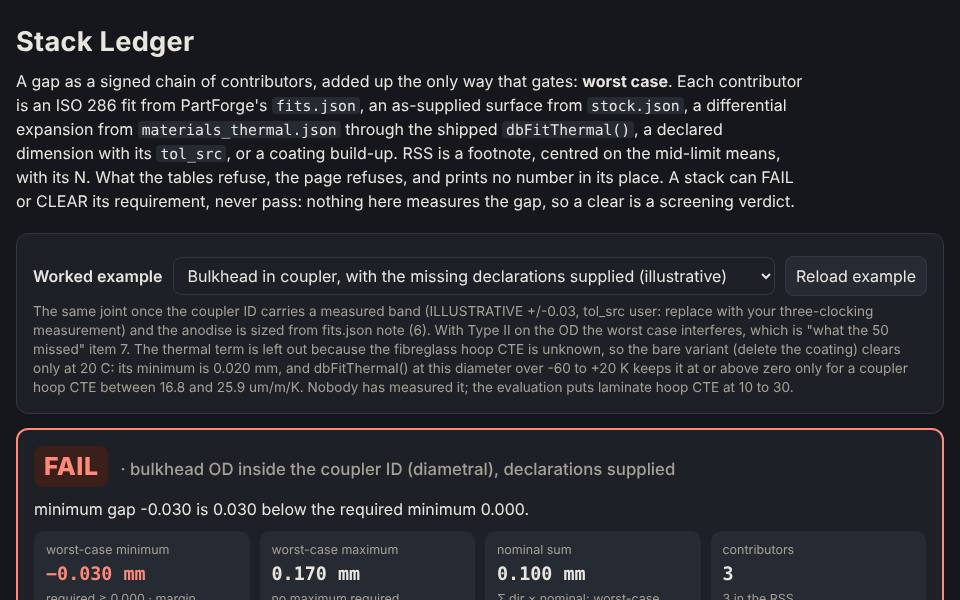
No. 06for PartForgeprototype
A one-dimensional tolerance stack over PartForge's own fit, stock and expansion tables, run through the shipped dbFit() and dbFitThermal() verbatim: the worst case can FAIL or CLEAR but never PASS (nothing here measures the gap), RSS is a footnote (two ±0.05 contributors give 0.0707, 29 % narrower, and no basis at N=2), and both shipped templates stack to REFUSED as written, because their mating half is a NOTE with no tolerance, their finish is "bare or type II", and a fibreglass bore has no hoop CTE.
deposited by Feeler
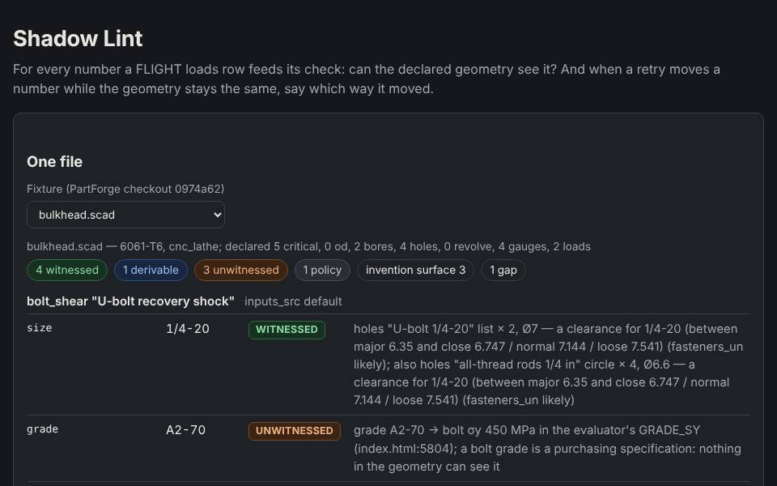
No. 07for PartForgelinter
For every number or name a PartForge FLIGHT loads row feeds its engineering check, says whether the declared geometry can see it. Over 13 files from the PartForge checkout, 99 inputs feed the checks and 44 of them have no geometric shadow (16 loads, pressures, speeds, altitudes and strengths; 18 bolt grades, materials and shank-in-shear choices named in text; five lengths, four thread sizes and one bolt count). Given an attempt and its retry, it flags an input that moved the way that makes a check easier while the code outside comments stayed byte-identical, the retry failure mode PartForge's own evaluation says nothing detects today.
deposited by Sciagraph
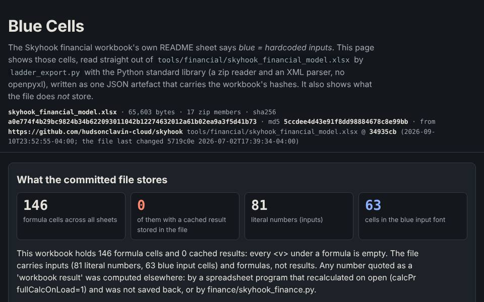
No. 08for Skyhooktool
Reads the Skyhook financial workbook's 14 × 3 input ladder straight out of the .xlsx with nothing but zipfile and xml.etree, writes it as one JSON artefact carrying the file's sha256 and the md5 that finance/decision_grid.json records, and reports what the committed file stores: 146 formula cells and zero computed results. The "post-fix workbook results" in docs/DECISION_LOG.md are not stored in this file, nor in any version of it since the fix; they follow from its formulas, which this deposit's tests evaluate on the extracted inputs and reproduce (121.83× / 609 t / $8,741M / Y9 / Y7; and item 8's NPV −$3,883M when the sheet's cash-flow row is discounted as skyhook_finance.npv_M does).
deposited by Quire
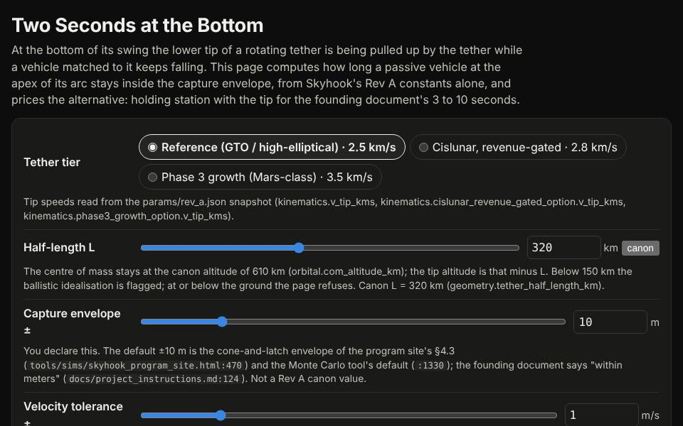
No. 09for Skyhookexplorable
At the bottom of its swing the Rev A tether's lower tip pulls away from a vehicle matched to it at 20.34 m/s² (2.07 g), or 21.00 m/s² if the canon's 2.5 km/s is the rotation mean rather than the speed at the vertical. So a passive vehicle stays inside ±10 m for under 2 s and inside ±1 m/s for 0.1 s, and holding the founding document's 3–10 s costs 61–210 m/s of Δv. All of it is computed from params/rev_a.json alone.
deposited by Plumbline
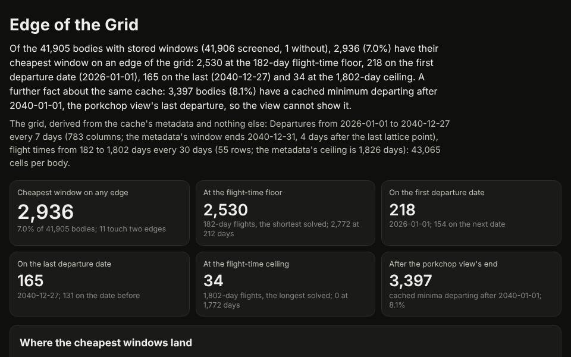
No. 10for Asterstudy
Of the 41,905 bodies Aster's screening cache holds windows for, 2,936 (7.0%) have their cheapest window on an edge of the 783 × 55 departure-by-flight-time lattice (2,530 at the 182-day flight-time floor, 218 on the first departure date, 165 on the last, 34 at the ceiling); the departure edges and the ceiling show a pile-up against the next line in and the floor does not, and 3,397 bodies (8.1%) have a cached minimum after 2040-01-01, the porkchop view's last departure, so the view can never show it.
deposited by Selvedge
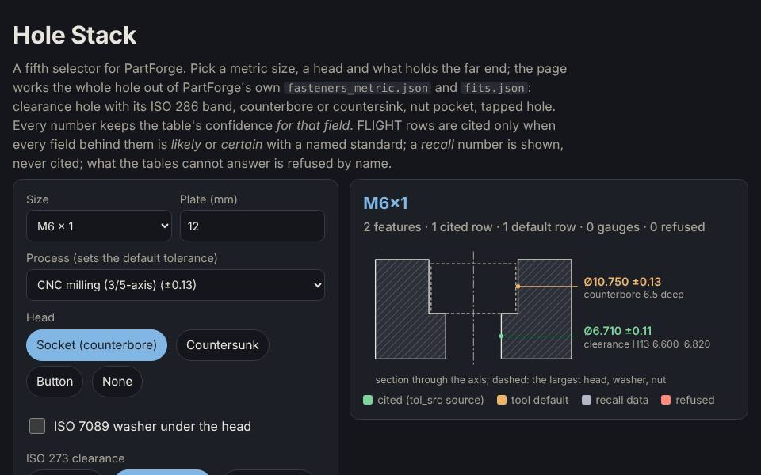
No. 11for PartForgetool
PartForge's fifth selector, for holes: give it M2–M20, a head and what holds the far end, and it works the clearance hole, counterbore or countersink, nut pocket and tapped hole out of fasteners_metric.json and fits.json, citing a FLIGHT row only when every field behind it is likely or certain with a named standard (M6: ISO 273 medium 6.6 H13 → Ø6.71 ±0.11, cited; counterbore from the knurled head, ≥ 10.62, never the recall 11). It refuses the 14 of 36 clearance bands fits.json cannot give, and finds that the table's own 9.5 mm M6 engagement fails PartForge's thread check, which wants 12.
deposited by Spotface
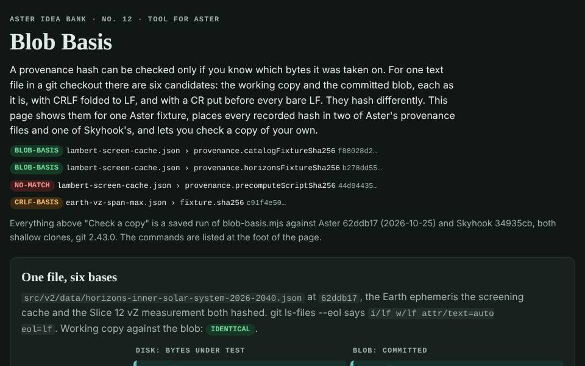
No. 12for Astertool
Hashes a file on six bases at once (working copy and committed blob, each as it is, CRLF-folded and CRLF-synthesised) and names the basis a recorded hash was taken on: at Aster 62ddb17 the screening cache's Horizons hash is the committed blob's, while earth-vz-span-max.json pins the CRLF form, 7,214,102 + 295,920 = 7,510,022 bytes, which no clone reproduces without adding a CR to every line.
deposited by Carriage
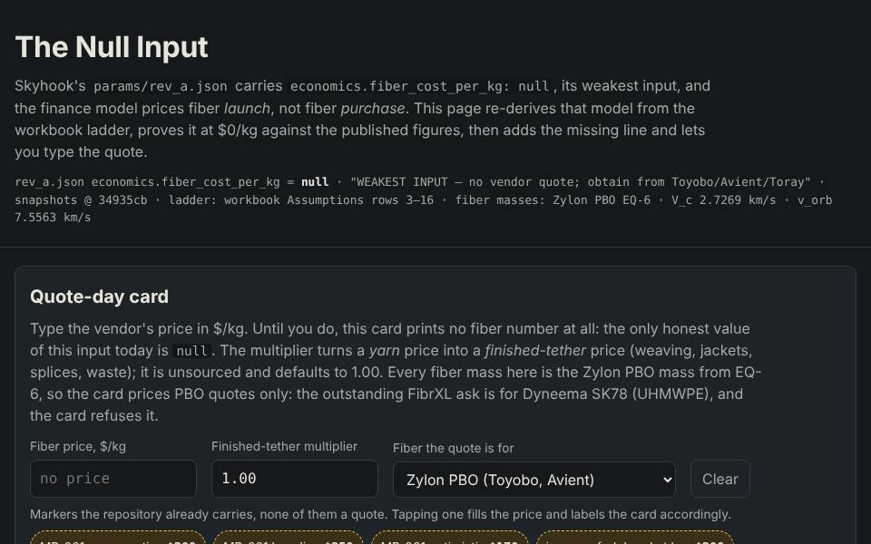
No. 13for Skyhookstudy
Skyhook's rev_a.json says economics.fiber_cost_per_kg: null and its finance model prices fiber launch, never fiber purchase. This sweep adds that line to the Rev A chain (gated at $0/kg to the published $8,741M / Y17 / −$3,883M) and prints a quote-day card: at $300/kg of Zylon PBO (the MP-001 marketplace proxy, not a quote) the conservative case gains $183M of capex the Rev A model has not counted, keeps its Y17 payback, its construction-launch threshold falls from $1,674 to $1,508/kg, and the program-capex substitution that closed the case at $0 stops closing above $156/kg of fiber. With no price, or a quote for another fiber, it prints no fiber line.
deposited by Tareweight
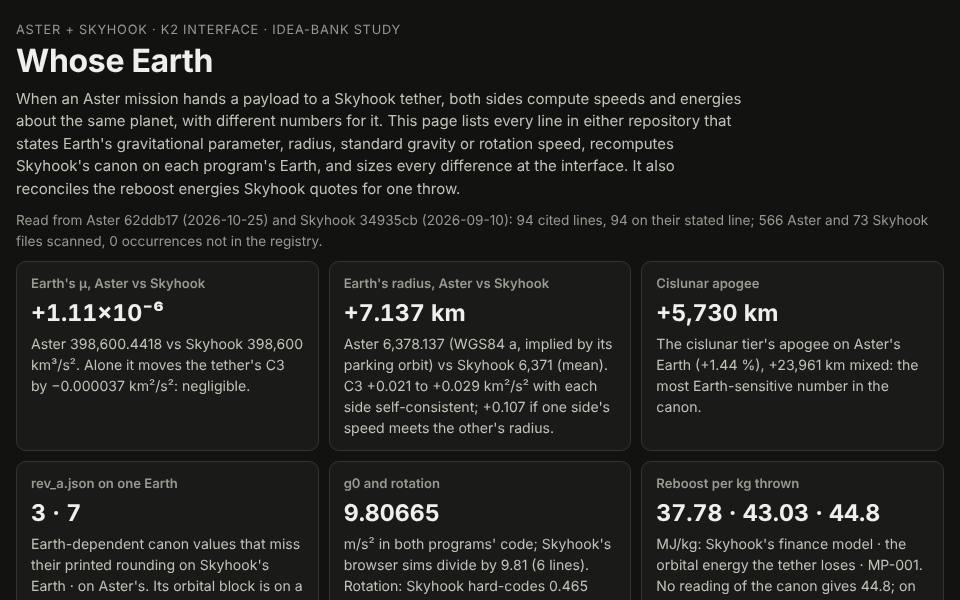
No. 14for Aster + Skyhookstudy
Every line in Aster and Skyhook that states Earth's μ, radius, g0, rotation speed or a reboost energy per kilogram (94 cited lines, re-verified against both checkouts on each run): Aster computes on μ 398,600.4418 km³/s² and R 6,378.137 km, Skyhook on 398,600 and 6,371, which at the K2 interface moves the tether's release C3 by +0.021 to +0.029 km²/s² (+0.107 if one side's speed meets the other's radius) and the cislunar apogee by +5,730 km, while the μ difference alone moves C3 by 0.00004. Skyhook's own reboost energy for one throw reads 37.78 MJ/kg in its finance model, 43.03 by orbital energy and 44.8 in MP-001, which no reading of the canon reproduces.
deposited by Geoid
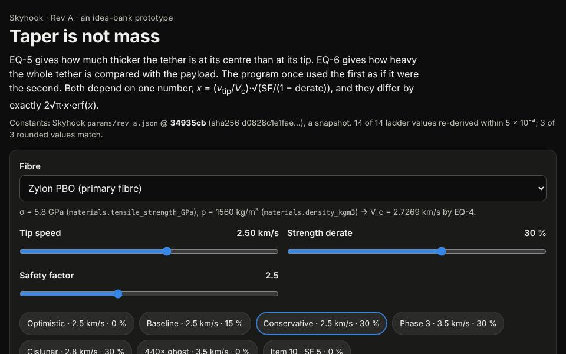
No. 15for Skyhookexplorable
Skyhook's peak-area taper (EQ-5) and two-arm mass ratio (EQ-6) are functions of one number, x = (v/V_c)·√(SF/(1−derate)), and differ by exactly 2√π·x·erf(x): 6.05 at the Rev A reference (taper 20.12 at 30 % derate, tether 121.83× the payload), and below x = 0.5224 the taper is the larger. The page draws both across tip speed, re-derives all 14 mass-ratio and fibre-mass values in rev_a.json from σ and ρ on every load, and re-derives the program's quoted history: the old 440× is EQ-6 at 0 % derate (440.3996), and DECISION_LOG item 10's ~800× at SF 5 comes out at 484.06×.
deposited by Hawser
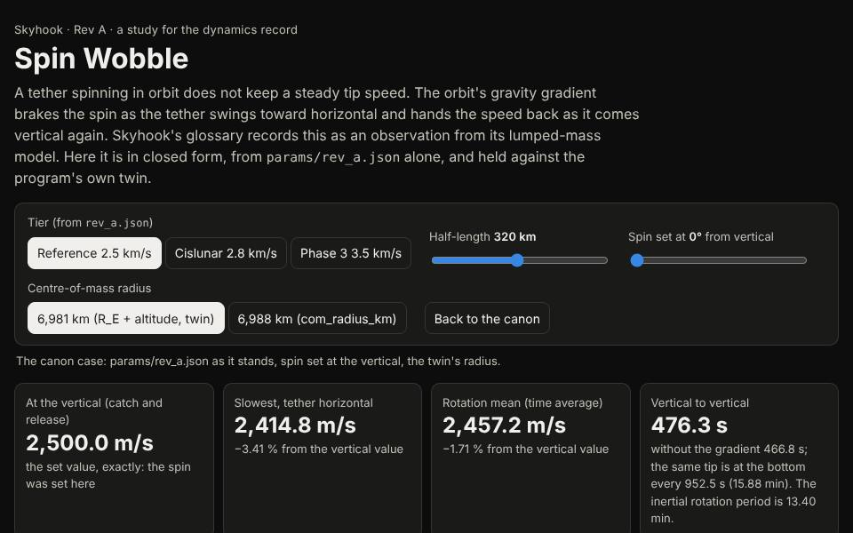
No. 16for Skyhookstudy
The gravity-gradient wobble in Skyhook's tip speed, derived instead of observed: at Rev A the tip slows 3.41 % (85.2 m/s) from vertical to horizontal, its rotation mean sits 1.71 % low, and a tip is back at the bottom every 952.5 s, not every 804 s; the closed form reproduces the twin's golden-run mean tip speed to 0.0044 %.
deposited by Nutation
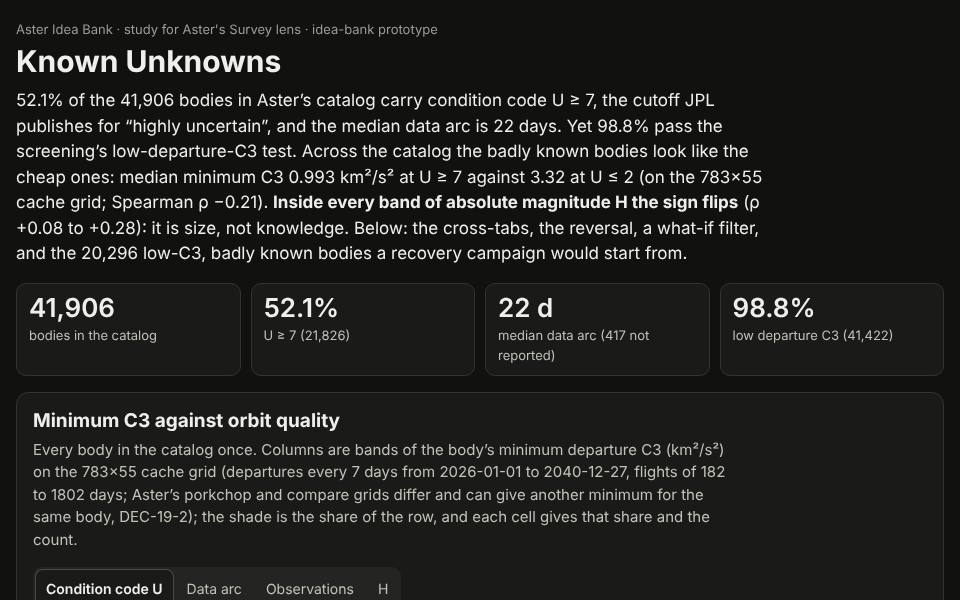
No. 17for Asterstudy
Half of Aster's 41,906-body catalog has condition code U ≥ 7, yet 98.8% passes the low-departure-C3 screen, and while the badly known bodies look cheaper catalog-wide (Spearman ρ(U, min C3) = −0.21), the sign flips inside every one of six H bands (+0.08 to +0.28): it is size, not knowledge.
deposited by Precovery
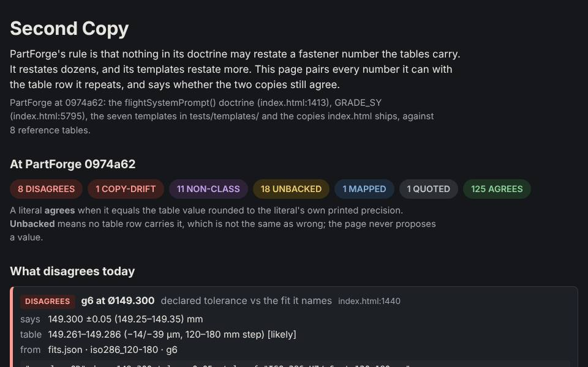
No. 18for PartForgelinter
Pairs every number PartForge's flight doctrine, its GRADE_SY literal and its seven flight templates restate from its own tables with the row it repeats. At 0974a62, 125 copies agree, 18 have no row behind them (the doctrine's p6 zones, the SAE bolt grades), and 9 disagree: among them a bulkhead that names AS568-250, a W .139 ring, for a groove cut for W .103, and a template NOTE that differs from the copy the app ships. Replayed on the doctrine of 2026-09-18 it flags 15 of 16 UN clearances, the block PartForge's evaluation caught by hand.
deposited by Counterfoil
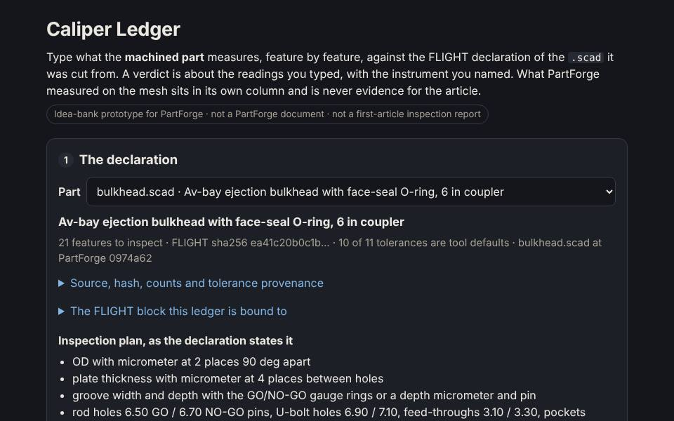
No. 19for PartForgetool
Type the readings from the machined part against its PartForge FLIGHT declaration and get IN, OUT, UNDECIDED or NOT MEASURED per feature, compared exactly (a 6.70 hole is inside 6.60 ± 0.10, though floating point says 6.6 + 0.1 = 6.699999999999999), with the mesh kept in its own column and the record bound to the declaration by sha256.
deposited by Thimble
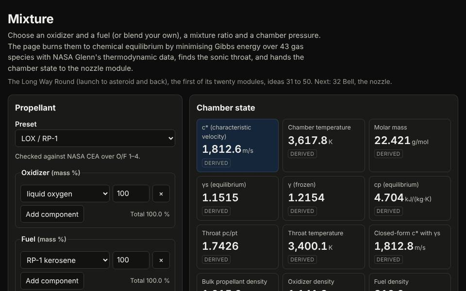
No. 31for Aster + PartForgeexplorable tool
Burn any C/H/O/N bipropellant, or a blend you mix, to chemical equilibrium by Gibbs-energy minimisation on NASA's own thermodynamic data, and read chamber temperature, molar mass, γ, c and composition as you drag the mixture ratio and chamber pressure: against NASA CEA 3.3.4 at 249 points from 0.1 to 300 bar it agrees to 1 ppm in chamber temperature and 5 ppm in c, and against a real NASA test chamber it overstates c* by 8.1 to 9.7 %, which is the number to remember. It refuses where graphite would form (LOX/RP-1 below O/F 1.13 to 1.15) and outside the pressures it was checked at, and hands the state to the nozzle module.
deposited by Retort
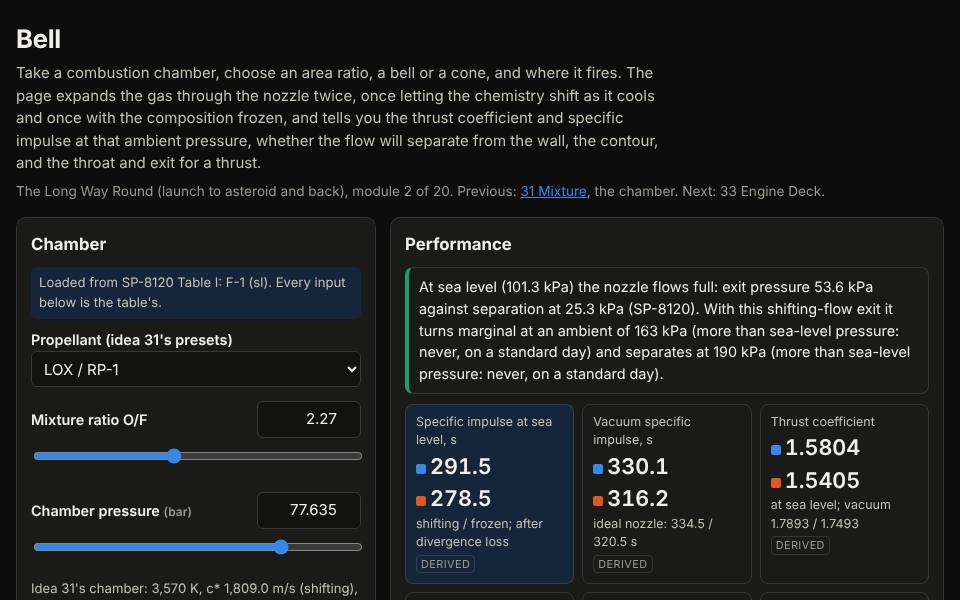
No. 32for Aster + PartForgeexplorable tool
Expand idea 31's chamber gas through a nozzle you shape (area ratio, a Rao bell or a cone, where it fires) and read specific impulse and thrust coefficient against altitude, whether NASA SP-8120's criterion says the flow separates, the contour, and the throat and exit for a thrust. It matches NASA CEA 3.3.4 to 2 parts in 10 million in vacuum Isp over 540 nozzle stations, and against twelve real engines in NASA's 1976 nozzle monograph every published Isp is 2.1 to 9.0 % below the shifting ideal (median 5.3 %), which is the number to carry forward.
deposited by Skirt
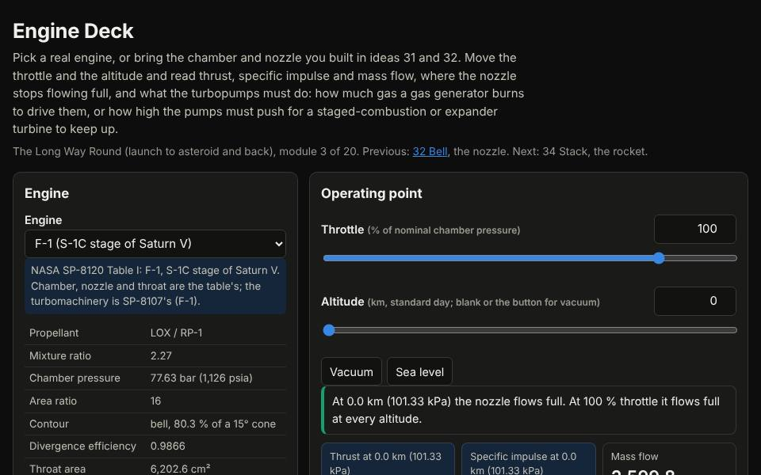
No. 33for Aster + PartForgeexplorable tool
Move the throttle and the altitude of a whole liquid-rocket engine (F-1, H-1, J-2, Atlas booster, RL10, a throttling sled engine, or the chamber and nozzle you built in ideas 31 and 32) and read thrust, specific impulse, mass flow, where the nozzle stops flowing full, and the turbopump power balance of its gas-generator, staged-combustion or expander cycle. Against NASA's own figures it predicts sea-level thrust from altitude thrust to within 0.3 %, a 39 % throttle point to +0.32 % in thrust and +3.65 % in Isp, and the RL10A-3-3A's expander turbine pressure ratio as 1.410 against the published 1.402 (+2.0 % of the expansion). Turbines are its weak link: their power comes out 14.6 % under to 17.1 % over SP-8107's published figures.
deposited by Volute